A LITTLE SOMETHING FROM OUR TEAM 01 / PLAY
THE CABBAGE CREW
ilovecabbages.
one team. many cabbages. one buggy.
02 / THE COLLECTION
14 pictures, zero explanationsall about cabbage.
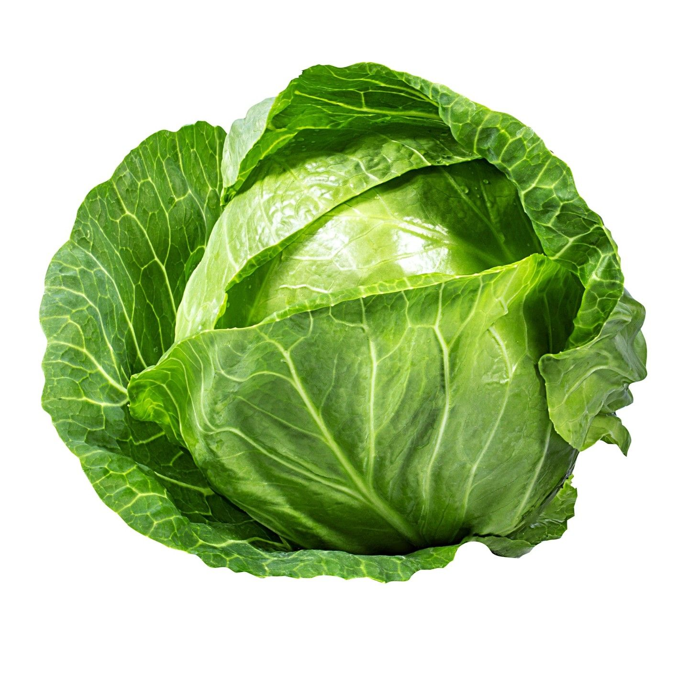
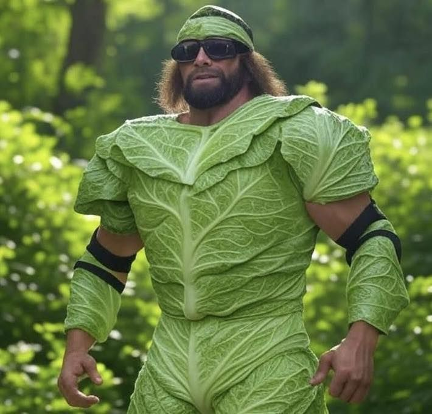
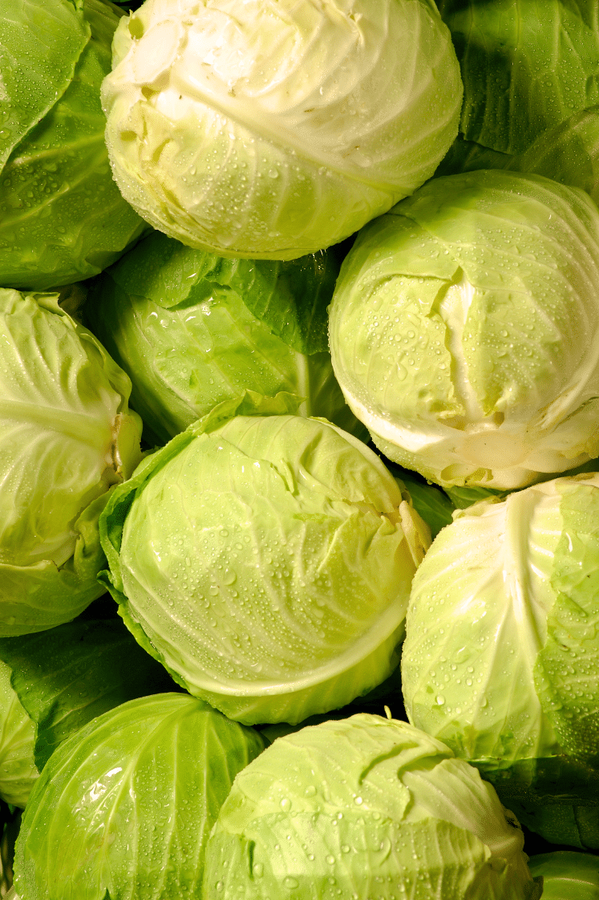
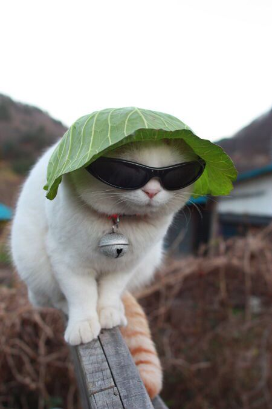
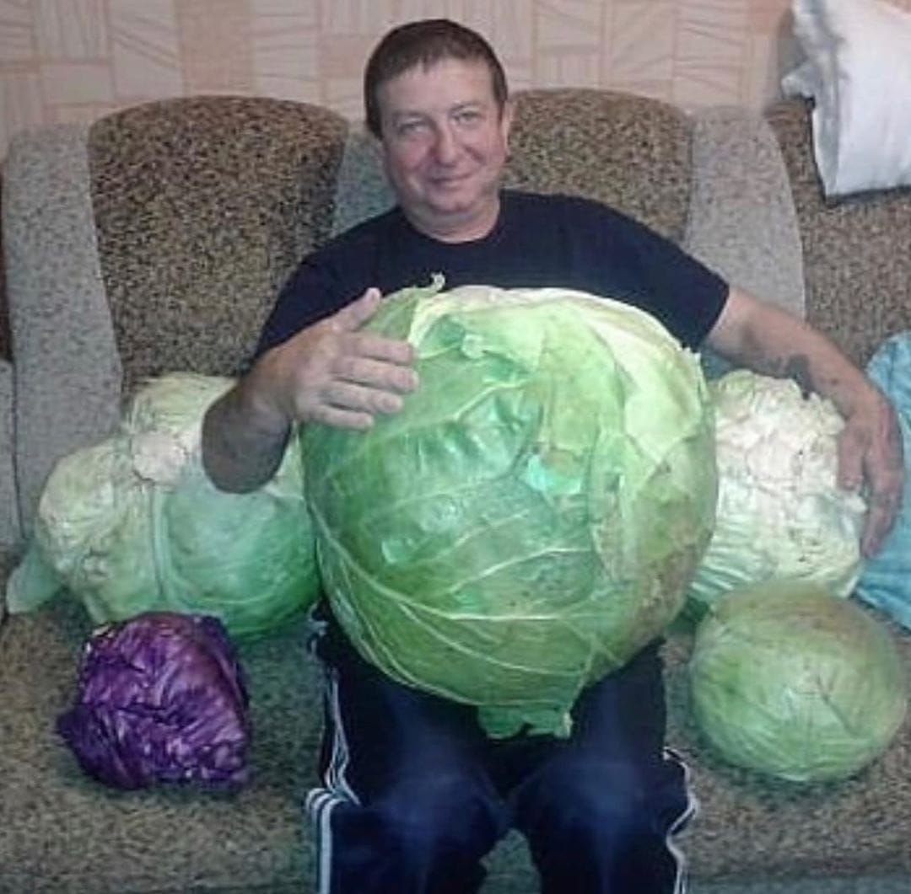
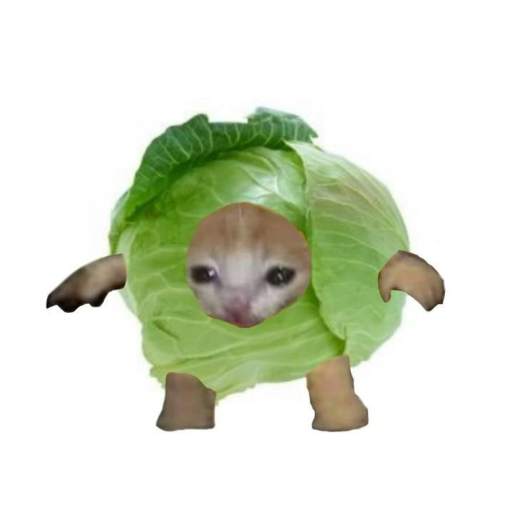
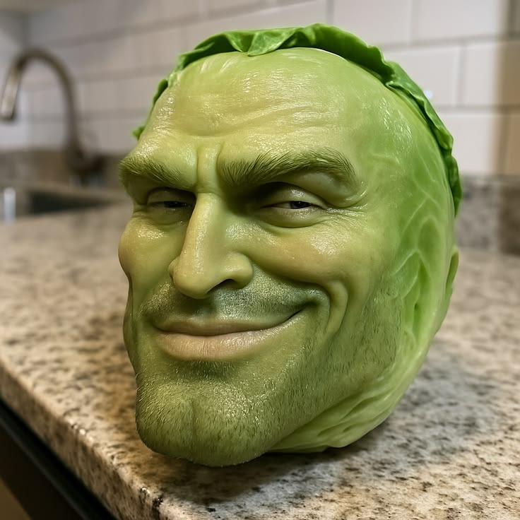
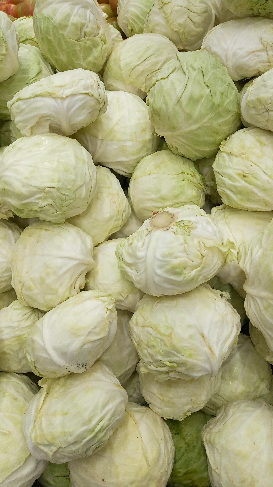
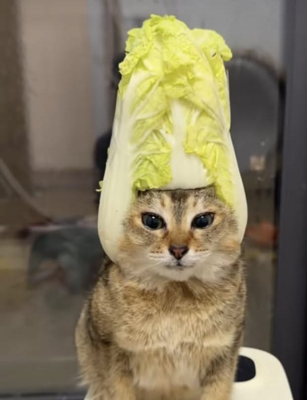
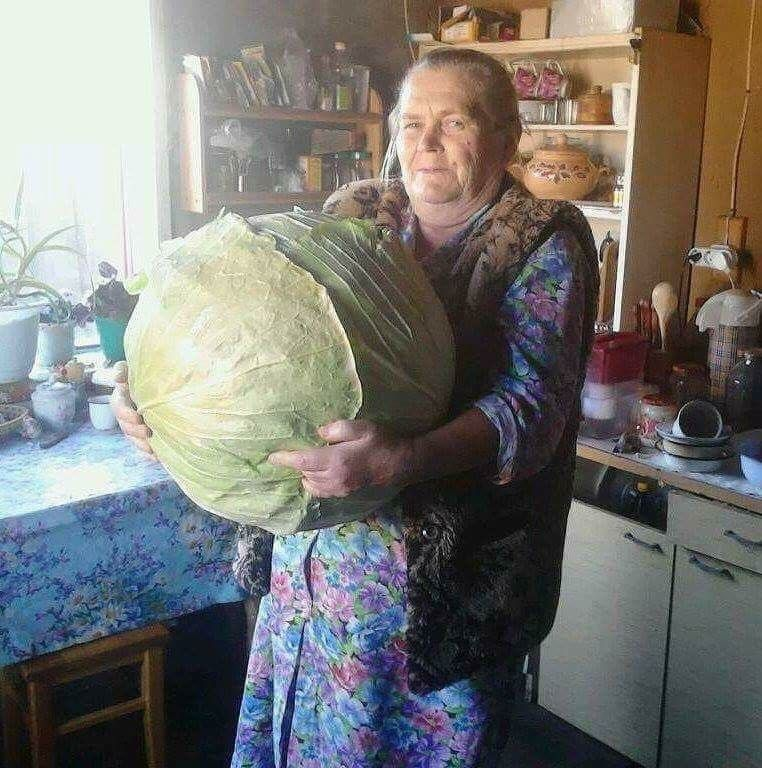
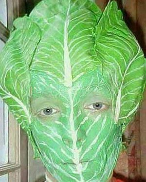
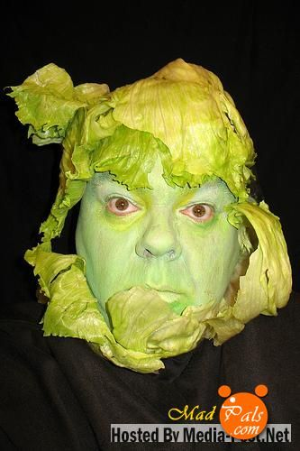
03 / GET THE CODE
three files. everything you need.build the buggy.
Windows Control CenterFull editable desktop application · Python · ZIP · v1.6.4Download
Arduino firmwareBuggyController.ino · Matching Uno sketch · v1.6.4Download
Motor test sketchMotorTest.ino · Separate left/right wheel diagnosticDownload
On Windows, extract the ZIP and open run.bat. Upload the Arduino sketch with the motor battery disconnected. Test with wheels raised; the right-wheel/braking issue has not been physically cleared. The downloadable version is v1.6.4, not the later reported v1.6.14.